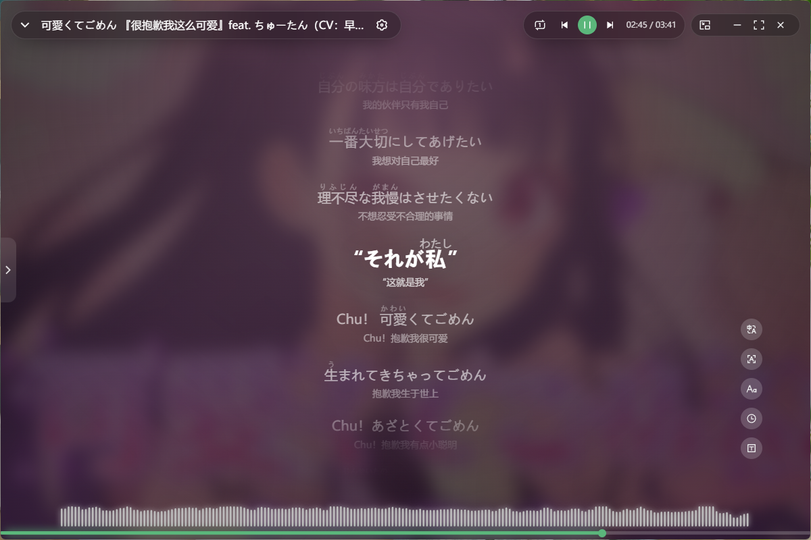

Features
所有功能都围着同一个场景：开着歌单干活，屏幕上随时看得见词、控得住播放。
左封面右歌词的沉浸界面，逐行聚焦滚动、当前行放大高亮；评论直接在右侧翻，支持楼中楼与图片放大。
自动标注振假名，可开关、可调字号。桌面歌词也跟着显示注音，已唱部分的注音一起换色。
独立置顶透明窗，压在任意桌面上都读得清；默认鼠标穿透不挡点击，指针落到歌词上才出现控制工具条。
一颗贴着屏幕边缘的小胶囊：实时歌词、溢出自动滚动，Windows 11 用系统亚克力材质，占用极低。
侧边栏、播放列表、右键菜单、弹窗统一主题感知的毛玻璃；浅色 / 深色 / 跟随系统，主色和圆角可自定义。
音频频谱跟着音乐跳，窗口边缘还有一条随节拍走的七彩灯带。特效有独立的帧率上限，不白吃显卡。
优先拉取更高码率音频（Hi-Res / FLAC），支持视频与音频提取下载、收藏夹批量下载、断点续传。
与手机端 BBPlayer 收藏夹双向兼容、云端同步，电脑上建的歌单手机直接能听。
Gallery
左右滑动，点任意一张看大图。
Download
全部产物在 GitHub Releases。文件名里的
x64 是 Intel / AMD 机器，arm64 是 Apple 芯片、骁龙本和多数 ARM 设备。
| 系统 | 推荐 | 什么时候选别的 |
|---|---|---|
| Windows 10 / 11 |
Biu-<version>-win-setup-x64.exe
NSIS 安装包，带开始菜单与自动更新
|
不想装、或没有管理员权限 → win-portable（免安装，但应用内更新受限，需手动替换） |
| macOS 12+ |
Biu-<version>-mac-arm64.dmg
Apple 芯片；Intel 机器选
mac-x64.dmg |
脚本 / CI 分发 → .zip；首次打开被拦就在「系统设置 → 隐私与安全性」里允许 |
| Linux |
Biu-<version>-linux-x64.AppImage
chmod +x 后直接运行 |
习惯包管理器 → .deb / .rpm；Arch 用户 → AUR
biu-bin
|
latest.yml 与 *.blockmap 是自动更新的辅助文件，手动下载时不用管。
Getting started
For developers
需要 Node 22.17.1 与 pnpm 10.24.0。
git clone https://github.com/xRetia/biu cd biu pnpm install pnpm dev # 起开发服务器并拉起 Electron pnpm build # 产出各平台安装包 pnpm test # Vitest
代码规范：ESLint 9 + Prettier + Stylelint；提交信息走约定式（feat: / fix:），husky
+ commitlint 会拦。欢迎提 Issue 与 PR，详见 README。
FAQ
更高码率（Hi-Res、无损）取决于账号权限，需要登录，部分还要大会员。整段无法播放时先试试切歌或重新解析。
歌词是多来源自动匹配的（B 站字幕、Netease、lrclib），匹配不到就留空。可以在歌词面板手动搜索并缓存，缓存后本机固定用这一份。
按假名占比判定：歌词里假名少于 15% 视为非日语，开关会置灰。转换在主进程离线完成，首次要等词典加载几秒。
它默认整体鼠标穿透，只有指针落在歌词上时才短暂接收点击。工具条点不到就先动一下鼠标——命中判定靠真实光标位置轮询。
特效都做了帧率门控：设置里有「动画帧率上限」（30/60/90/120/144，默认 60），频谱、背景虚化和边缘灯带都受它约束；暂停时灯带直接停帧。
不能。项目采用 PolyForm Noncommercial 1.0.0，禁止销售、收费服务、广告变现、商业集成等任何商业用途。